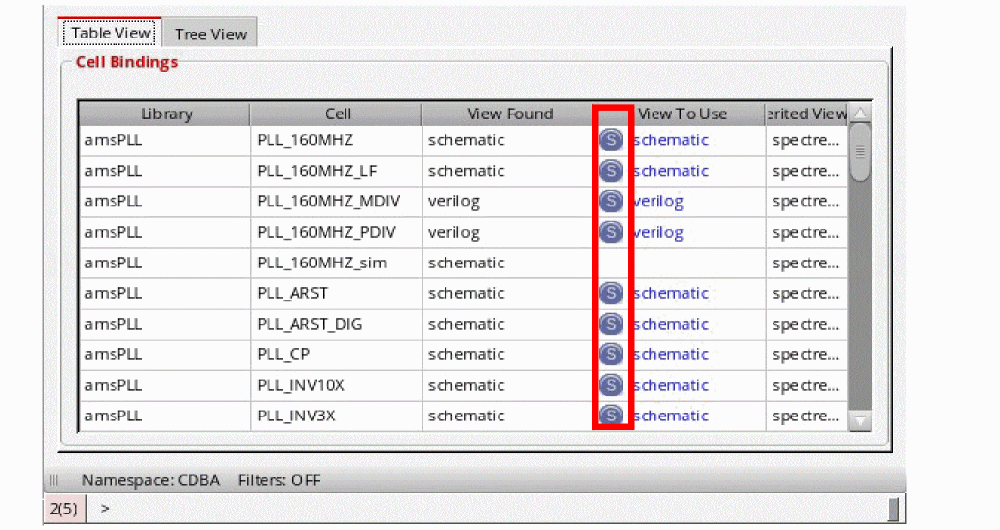

Creating a Snapshot Configuration
The snapshot configuration feature provides a way to freeze a certain configuration where all cells are explicitly bound in the whole design hierarchy. When this frozen configuration is reloaded, changes on a disk do not affect the binding when the library and view list are applied.
The snapshot configuration is served just like a generic configuration but with all the cells explicitly bound. It can be created, saved, edited, and loaded like a generic configuration. It is not supported in standalone HED.
To create snapshot configuration, you need to perform the following steps:
- From the Virtuoso Hierarchy Editor window, select Edit – Create Snapshot Config. Otherwise, you can select the Create a snapshot config icon ( ) on the HED toolbar.
-
The creating a snapshot config dialog box is displayed. The default format of snapshot name is
<config_name>_snapShot_<date>_<time>. In the Description section, the information is carried over from the original configuration. You can update the view name and description as required. -
Click the OK button, to create a fully bound snapshot config. As highlighted below, the snapshot binding are shown with the “S” symbol.
The cells or instances with “S” symbol imply the binding is set by the snapshot feature, whereas, those without “S” imply that it is explicitly set. The top design is "amsPLL" "PLL_160MHZ_sim" "schematic" and does not have an explicit binding set by the create snapshot functionality.
To get an accurate snapshot config for a design containing Pcells, open the Options form by selecting View – Options from the Virtuoso Hierarchy Editor window. Then, in the General tab, select the Evaluate Pcells check box, as highlighted below. If the Pcell evaluation is turned off, a warning message gets displayed when the snapshot is created or checked.
Return to top